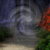
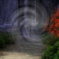

jquery响应式lightbox插件Galpop Responsive Multimedia Gallery Popup Plugin With jQuery
示例演示 | Galpop Image Gallery Popup
1、单张图片
Just bind galpop to the anchor link.

2、多张图片
Bind a series of images with the same "data-galpop-group" attribute value.


 



3、带标题和链接的图片lightbox
Galpop has a box on the lower left corner for captions. If the anchor contains a "title" attribute, that will be added to the box. If the anchor contains a "data-galpop-link" attribute, it will add an anchor to the box. Adding a "data-galpop-link-title" attribute will change the text of the anchor, and adding a "data-galpop-link-target" attribute will change the target of the anchor.
4、回调函数
You can add a callback function to fire after every completion of an image. You can grab the index and count from the "#galpop-wrapper" element.
5、手动打开Lightbox
You can also manually open the popup whenever you wish. You will have to use the "openBox" method and pass it the settings and image URL to open.
6、手动打开一组图片
You can also manually open the popup as a group. Instead of passing it one url, you can use an array.
7、加载 iframe 内容
In addition to images, you can also load an iframe into the popup.
8、加载 AJAX 内容
If you don't want to load the entire window into an iframe, you can pick specific elements to load.

{kind=link}
{kind=link}